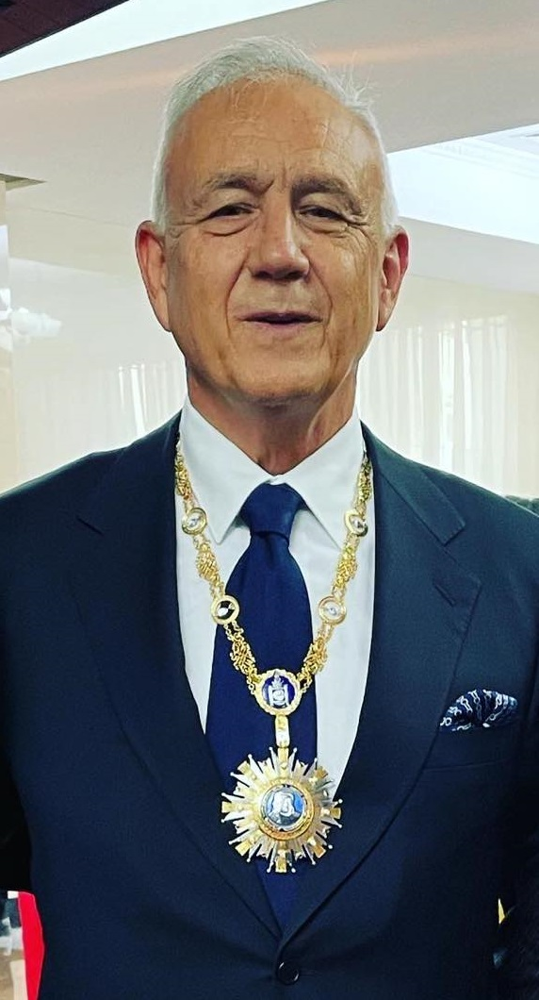
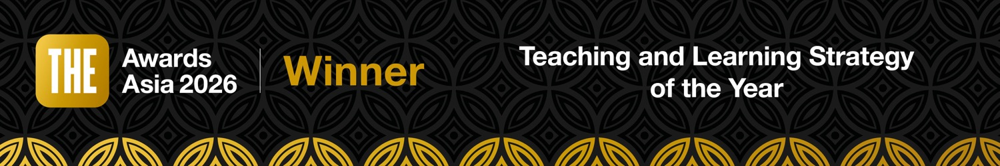
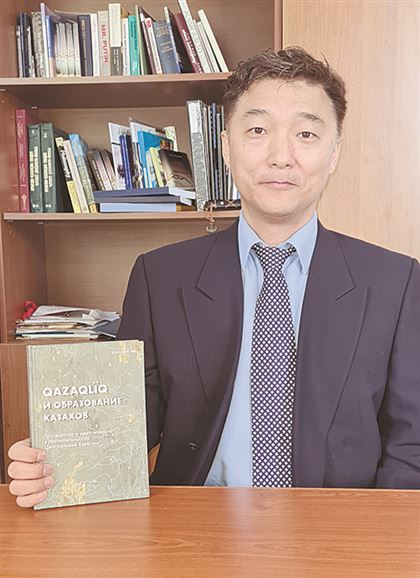
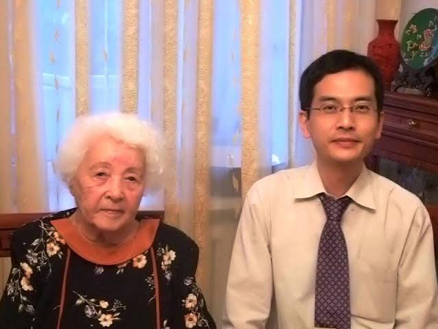
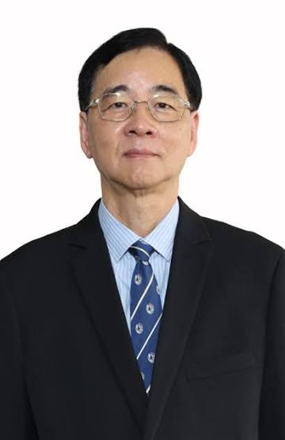
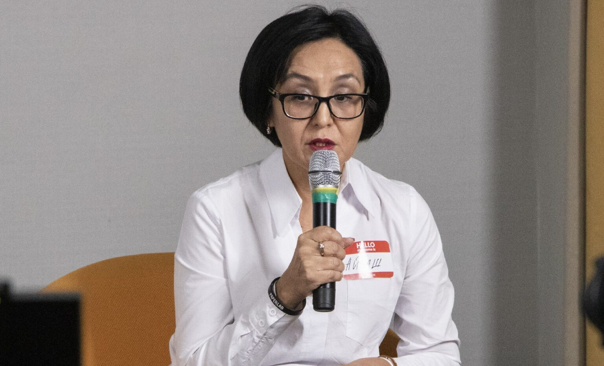

Jack Weatherford
Почётный профессор антропологии, Macalester College, США
Вклад кочевых цивилизаций в мировую историю: стратегическое мышление и адаптивность


Наследие Великой степи и современные решения
Зарегистрироваться ↗30–31 октября 2026 · Алматы, Казахстан

Уважаемые коллеги и друзья! Almaty Management University приглашает вас 30–31 октября 2026 года в Алматы на международную конференцию ALMAU – TOLYQ ADAM 2026. Это пространство академического и профессионального диалога о миссии университета в условиях технологических, социальных и культурных изменений.

Образовательная программа Tolyq Adam университета AlmaU стала победителем THE Awards Asia 2026 в номинации «Стратегия преподавания и обучения года».
Почётный профессор антропологии, Macalester College, США
Вклад кочевых цивилизаций в мировую историю: стратегическое мышление и адаптивность

Историк, исследователь Центральной Евразии и тюркского мира
Professor of Central Eurasian History, University of Toronto (Canada)

Профессор, Slavic-Eurasian Research Center, Hokkaido University, Япония
Движение Алаш и казахская модернизация начала XX века

Представитель Bard College, США
Опыт реализации образовательной модели Liberal Arts

Профессор, The Hong Kong Polytechnic University
Целостное образование и благополучие студентов

Культуролог, профессор практики, AlmaU
Мировоззрение Великой степи и культурная идентичность
профессор философии Aix-Marseille Université
директор исследовательского Центра Centre GillesGaston Granger, UMR 7304

французский историк, профессор INALCO
специалист по истории Центральной Азии

Исследователь кочевой цивилизации, культурного наследия и мировоззрения Великой степи
Автор труда: “Nomads: In Search of the Lost Path” (Springer)
